← PhenoVoxel ArchiveCollection expansion · v0.6.82 · 7 November 2026
Life, from the original surfaces.
10 new species from DigitalLife3D. Native, locally bundled models with source pigment maps, retained anatomy and creator rigs. The archive now contains 351 species.
What changedConverted legacy materials for the archive renderer, retained the source colour patterns and normal maps, removed metallic skin response, and prepared manageable browser assets. No display base was found in these ten sources; the archive’s studio floor is hidden. The flatback is a static inspection model. Nine others retain creator movement.
These are source-guided reconstructions, not independently validated physiology. Life stage and individual differences are identified. Dedicated reference photographs and occurrence-count snapshots are still pending; taxonomy links and live GBIF mapping remain available. Most source models are CC BY-NC 4.0, not licensed for commercial use.
Adult male; museum scan reconstruction
Komodo dragon
Varanus komodoensis · CC BY-NC 4.0
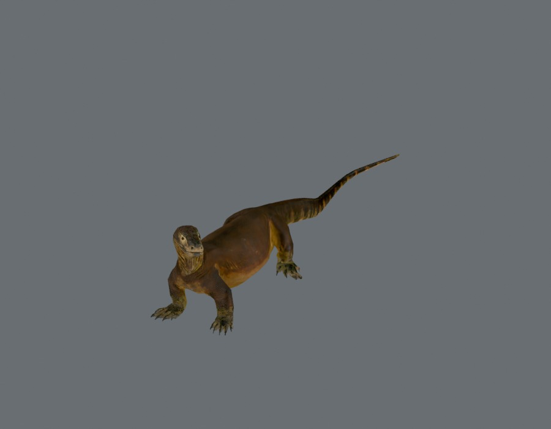
Exterior · Blender preparation render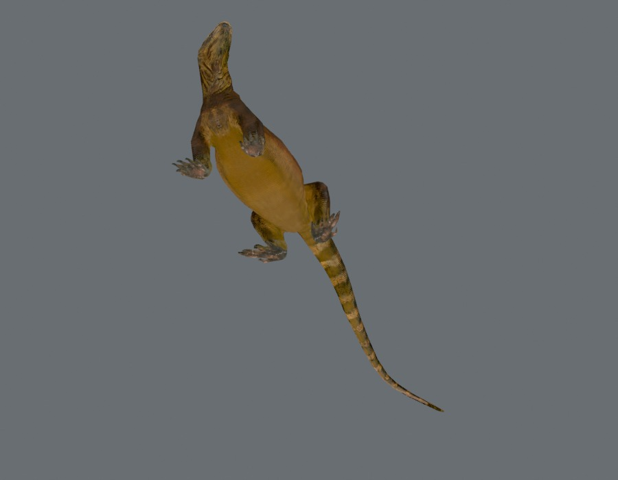
Underside · Blender preparation renderA large monitor with granular scales, sturdy clawed limbs and a long muscular tail. Adult male; museum scan reconstruction.
Original creator animation plays on its own skeleton. Timing is uncalibrated.
No display base detected. Feet, flippers and lower surfaces are retained.
Attribution and source construction
This is an animated 3D model of an adult male Komodo Dragon (Varanus komodoensis) that was created in collabroation with the Vienna Museum of Natural History (https://www.nhm-wien.ac.at/en). UMASS undergraduate Mohammed Al Zubaidi modified and retopologized and animated a 3D photogrammetry scan taken by the museum. We thank Viola Winkler and other staff at the museum for kindly allowing us to work with, and modify their scan. We also thank UMASS PhD student Josh Medina for assistance.
Downloads are freely available for creative and non-profit use. To inquire about licensing, please visit www.digitallife3d.org
Big Mama; scan-derived individual
Tokay gecko
Gekko gecko · CC BY-NC 4.0
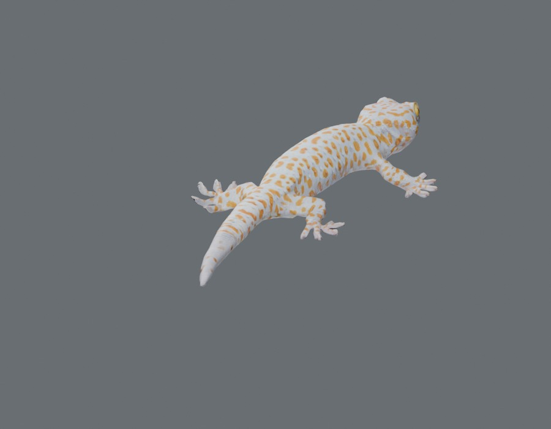
Exterior · Blender preparation render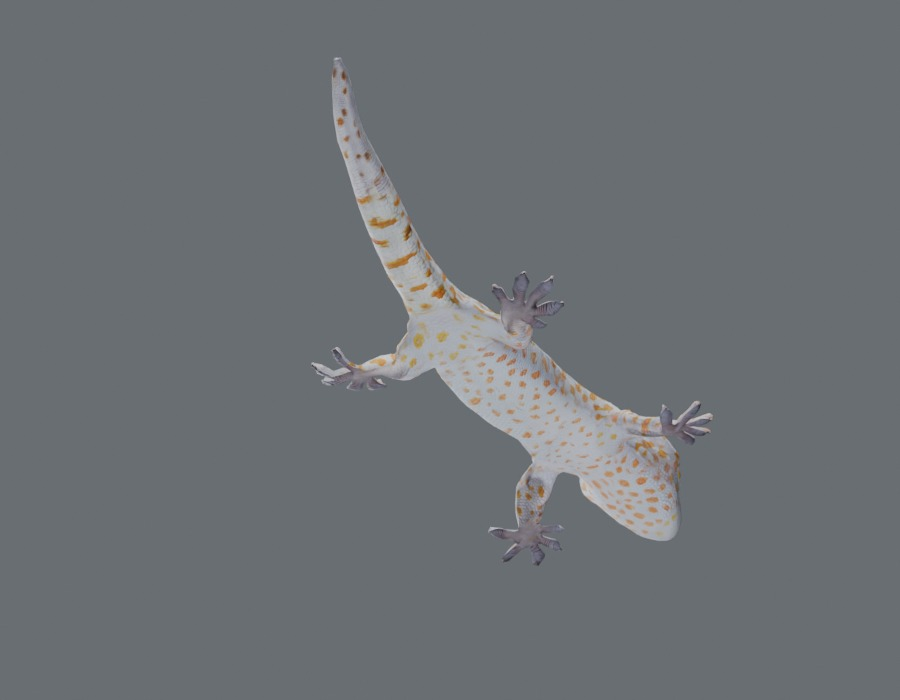
Underside · Blender preparation renderA spotted gecko with a broad head, large eyes and expanded adhesive digits. Big Mama; scan-derived individual.
Original creator animation plays on its own skeleton. Timing is uncalibrated.
No display base detected. Feet, flippers and lower surfaces are retained.
Attribution and source construction
This is a 3D animation of a tokay gecko (*Gekko gecko*) that was originally captured by the Beastcam technology. Animator Johnson Martin converted the raw photogrammetry scan to this animated walk cycle.
Downloads are freely available for creative and non-profit use. To inquire about licensing, please visit **www.digitallife3d.org**.
Male; composite of live and preserved specimens
Riggenbach’s reed frog
Hyperolius riggenbachi · CC BY-NC 4.0
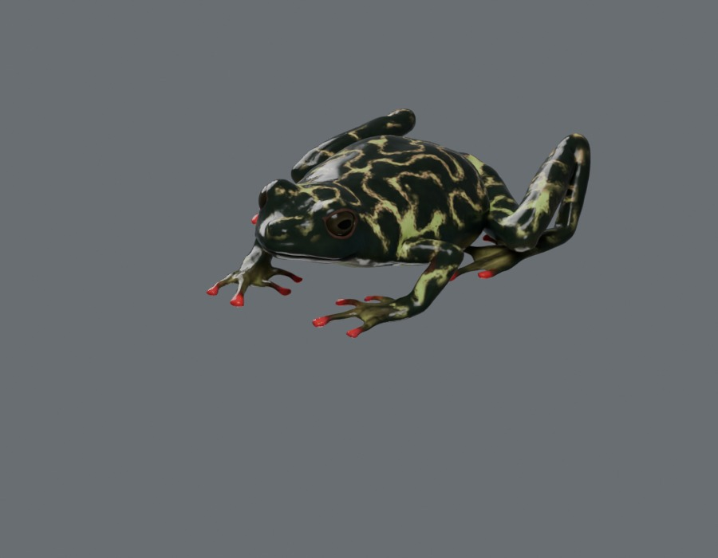
Exterior · Blender preparation render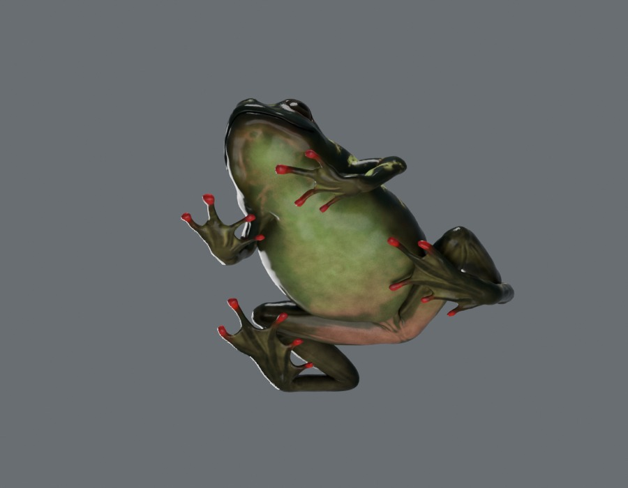
Underside · Blender preparation renderA small reed frog reconstructed from two museum-associated scans and photographs. This is one male colour form. Male; composite of live and preserved specimens.
Original creator animation plays on its own skeleton. Timing is uncalibrated.
No display base detected. Feet, flippers and lower surfaces are retained.
Attribution and source construction
This is a 3D animation of a male reed frog (Hyperolius riggenbachi). The 3D animation was created through combining two 3D photogrammetry scans - that of a live male in the California Academy of Sciences, and of a preserved male from the same museum. CG artists Johnson Martin and Ariadna N. created the 3D model from these scans, and from images of these live frogs. We thank Lucinda Lawson from the University of Cincinnati for funding the resaerch, and Rayna Bell from the California Academy of Sciences for providing access to specimens.
Downloads are freely available for creative and non-profit use. To inquire about licensing, please visit www.digitallife3d.org.
Adult male; museum scan and live-video reconstruction
Japanese giant salamander
Andrias japonicus · CC BY-NC 4.0
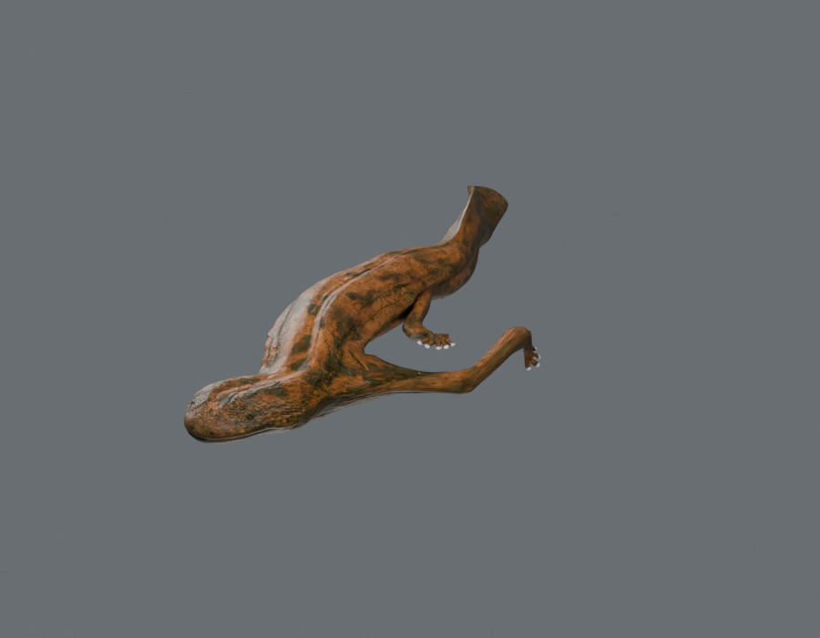
Exterior · Blender preparation render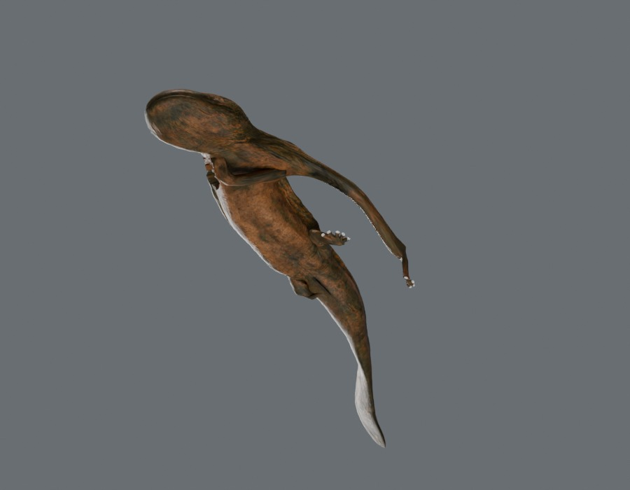
Underside · Blender preparation renderA flattened aquatic salamander with small eyes, folded skin and a laterally compressed tail. Adult male; museum scan and live-video reconstruction.
Original creator animation plays on its own skeleton. Timing is uncalibrated.
No display base detected. Feet, flippers and lower surfaces are retained.
Attribution and source construction
This is a 3D animation of an adult male Japanese Giant Salamander (Andrias japonicus). The 3D model was reconstructed by CG artist Johnson Martin using a 3D photogrammetry scan taken of a specimen from the Smithsonian Museum, and also live video taken from live specimens at the National Zoo. The animation was created from videos of live salamanders walking. This 3D model was created in collaboration with Sandy Kawano from George Washington University, who funded the research. We Matt Evans for assistance at the National Zoo, and Kevin De Querioz for assistance with specimens from the Smithsonian. CG artist Johnson Martin completed the bulk of the modelling in blender, with assistance from Josh Medina, Emma Hsiao and Braedon Fedderson.
This model is free to download for non-profit use. To inquire about licencing, please contact duncan@umass.edu
Adult eastern painted turtle; composite reconstruction
Painted turtle
Chrysemys picta · CC BY-NC 4.0
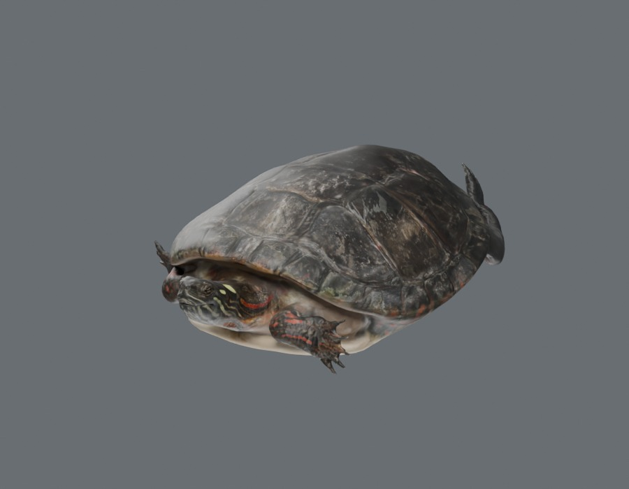
Exterior · Blender preparation render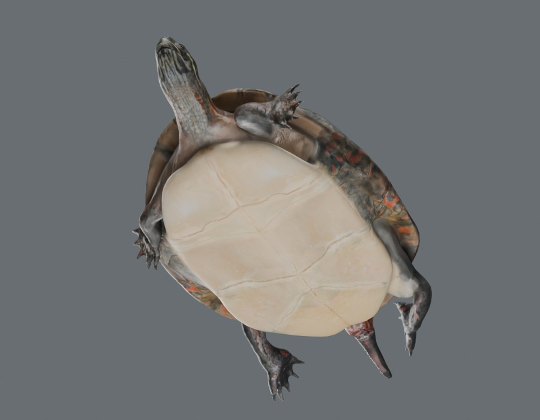
Underside · Blender preparation renderA freshwater turtle with a smooth, dark carapace and contrasting markings on the head and limbs. Adult eastern painted turtle; composite reconstruction.
Original creator animation plays on its own skeleton. Timing is uncalibrated.
No display base detected. Feet, flippers and lower surfaces are retained.
Attribution and source construction
This is an animation of an adult Eastern Painted Turtle (Chrysemys picta). This 3D model is a composite of two scans - one from an adult live Eastern Painted Turtle housed at the Maymont Nature Center (https://maymont.org/animals/nature-center/), and the other a preserved adult Eastern Painted Turtle from the Natural History Collection at the University of Massachusetts at Amherst (https://bcrc.bio.umass.edu/nhc/home).
CG artists Jer Bot, Johnson Martin and Robert Gutierrez used Blender to reconstruct the full turtle from these scans, as well as animate the movements. Thanks to the Maymont Nature Center, the Richard Lewis Media Group (http://rlmg.com/), and the Natural History Collection for facilitating the work.
Downloads are freely available for creative and non-profit use. To inquire about licensing, please visit **www.digitallife3d.org**.
Shelly; near-adult, source straight carapace length 86 cm
Loggerhead sea turtle
Caretta caretta · CC BY-NC 4.0
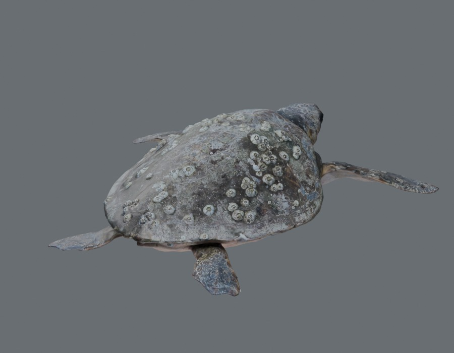
Exterior · Blender preparation render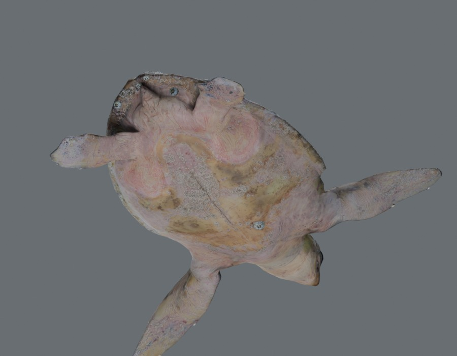
Underside · Blender preparation renderA large-headed sea turtle with a reddish-brown shell, pale plastron and powerful jaws. Shelly; near-adult, source straight carapace length 86 cm.
Original creator animation plays on its own skeleton. Timing is uncalibrated.
No display base detected. Feet, flippers and lower surfaces are retained.
Attribution and source construction
This is a 3D animation ("Shelly") of a near-adult loggerhead (ID=982.000406129037) sea turtle (*Caretta caretta*, straight carapace length=86 cm) that was initially captured on June 23, 2017 by the Inwater Research Group, and then photgraphed with the Beastcam technology with 20 Canon G16 cameras. Photographer Christine Shepard operated the cameras and the sea turtle was released that same day in good condition. The 3D model was initially created through a photogrammetry scan using Capturing Reality.
Animator Johnson Martin used Blender to reconstruct the full sea turtle from these scans, as well as animate the movements. Jeanette Wyneken from Florida Atlantic University, and Charles Mairne from the Loggerhead MarineLife Center each provided feedback on the movements.
If you are interested in downloading this 3D model, please visit our website www.digitallife3d.org
Mar; young turtle, source calls hatchling, 11.8 cm straight carapace
Hawksbill sea turtle
Eretmochelys imbricata · CC BY-NC 4.0
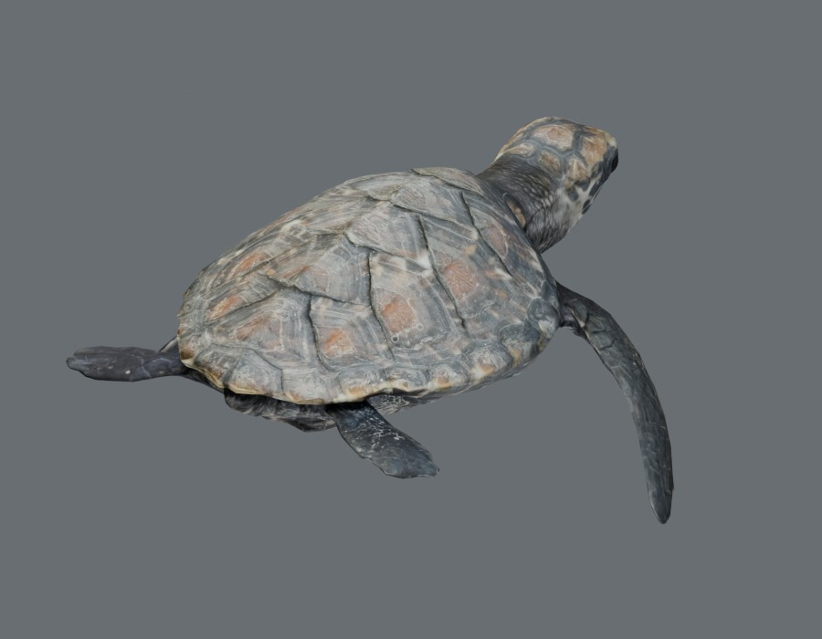
Exterior · Blender preparation render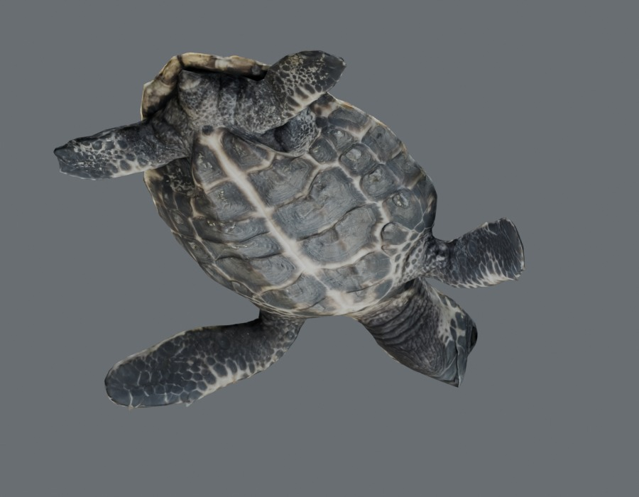
Underside · Blender preparation renderThis young hawksbill represents an early life stage, not the proportions or colour of a full-sized adult. Mar; young turtle, source calls hatchling, 11.8 cm straight carapace.
Original creator animation plays on its own skeleton. Timing is uncalibrated.
No display base detected. Feet, flippers and lower surfaces are retained.
Attribution and source construction
This is an animation (“Mar”) of a hatchling Hawksbill (ID Ei1801) sea turtle (*Eretmochelys imbricata*, straight carapace length 11.8 cm) that was initially rescued by the Loggerhead MarineLife Center, and then photographed with the Beastcam technology with 30 Canon G16 cameras. The sea turtle was released soon after in good condition. The 3D model was initially created through a photogrammetry scan using Capturing Reality.
Animator Johnson Martin used Blender to reconstruct the full sea turtle from these scans, as well as animate the movements. Jeanette Wyneken from Florida Atlantic University, and Charles Mairne from the Loggerhead MarineLife Center each provided feedback on the movements
If you are interested in downloading this 3D model, please visit our website www.digitallife3d.org
Tumbleweed; juvenile rehabilitated turtle
Kemp’s ridley sea turtle
Lepidochelys kempii · CC BY-NC 4.0
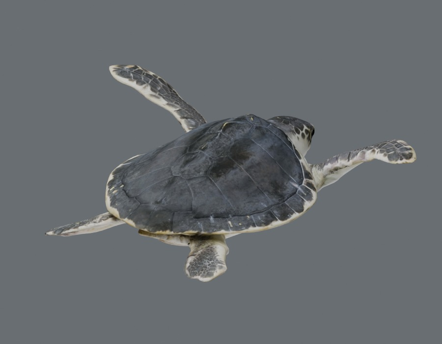
Exterior · Blender preparation render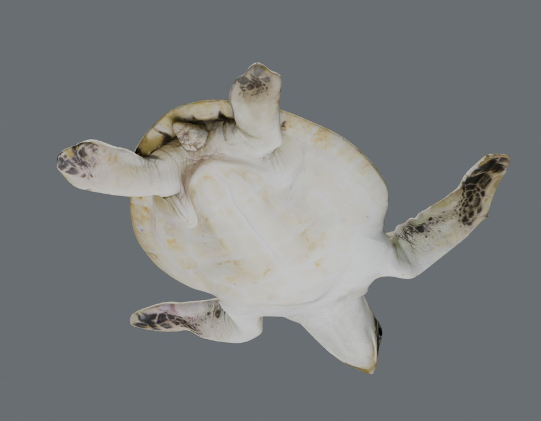
Underside · Blender preparation renderA juvenile Kemp’s ridley with its original photographed skin and shell. The creator removed a rehabilitation ID tag digitally. Tumbleweed; juvenile rehabilitated turtle.
Original creator animation plays on its own skeleton. Timing is uncalibrated.
No display base detected. Feet, flippers and lower surfaces are retained.
Attribution and source construction
This is a 3D model (“Tumbleweed”) of a juvenile Kemps Ridley Sea Turtle (ID 132) (*Lepidochelys kempii*) that was initially rescued by the New England Aquarium in Massachusetts, and then photographed with the Beastcam technology with 30 Canon G16 cameras. The sea turtle was released soon after in the Southern United States in good condition. The 3D model was initially created through a photogrammetry scan using Capturing Reality. We digitally scrubbed the ID tag on the shell.
Animator Robert Gutierrez used Blender to reconstruct the full sea turtle from these scans, as well as animate the movements. Jeanette Wyneken from Florida Atlantic University, and Connie Merigo from the New England Aquarium each provided feedback on the movements.
Downloads are freely available for creative and non-profit use. To inquire about licensing, please visit **www.digitallife3d.org**.
Source-specific flatback turtle
Flatback sea turtle
Natator depressus · CC BY 4.0
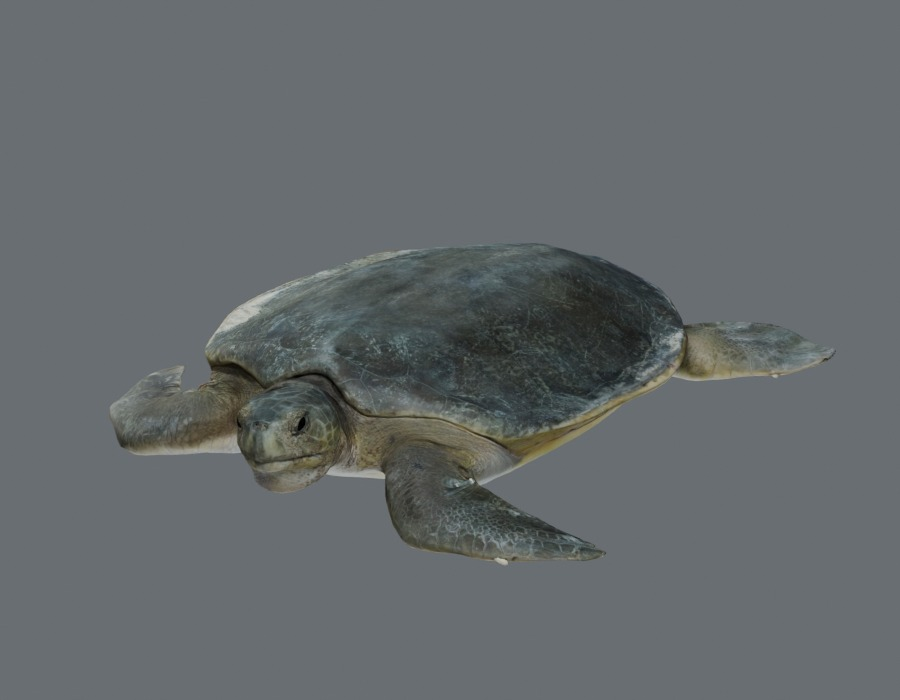
Exterior · Blender preparation render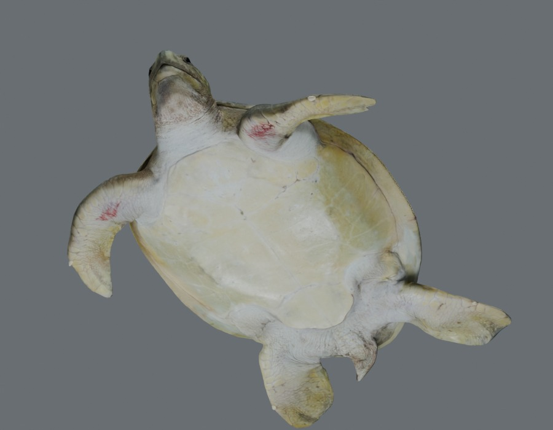
Underside · Blender preparation renderA flatback sea turtle with a comparatively low shell profile. Source-specific flatback turtle.
Static source: inspection only. No working swimming clip is claimed.
No display base detected. Feet, flippers and lower surfaces are retained.
Attribution and source construction
This is a 3D model ("Mary") of an adult (curved carapace length 940 mm) female flatback sea turtle (Natator depressus, PIT tag 900119000520197, captured 11/21/17, Thevenard Island, Western Australia) as part of the Department of Biodiversity, Conservation and Attractions' North West Shelf Flatback Turtle Conservation Program (DBCA-NWSFTCP) with Scott Whiting (DBCA), Sabrina Fossette (DBCA) and Adrian Gleiss (Murdoch University). The turtle was photographed on a nesting beach using the Beastcam system and released in good condition. The 3D model was created through a photogrammetry scan using COLMAP and Autodesk REMAKE. Animator Jer Bot used Blender to reconstruct the sea turtle. Credit should be given to the Digital Life project and NWSFTCP: “The author(s) acknowledge the Digital Life project and the Department of Biodiversity, Conservation and Attractions’ North West Shelf Flatback Turtle Conservation Program for creation of the 3D flatback turtle model”.
Inquire about licensing: **www.digitallife3d.org**.
Mac; adult female reconstructed from video and biological data
Leatherback sea turtle
Dermochelys coriacea · CC BY-NC 4.0
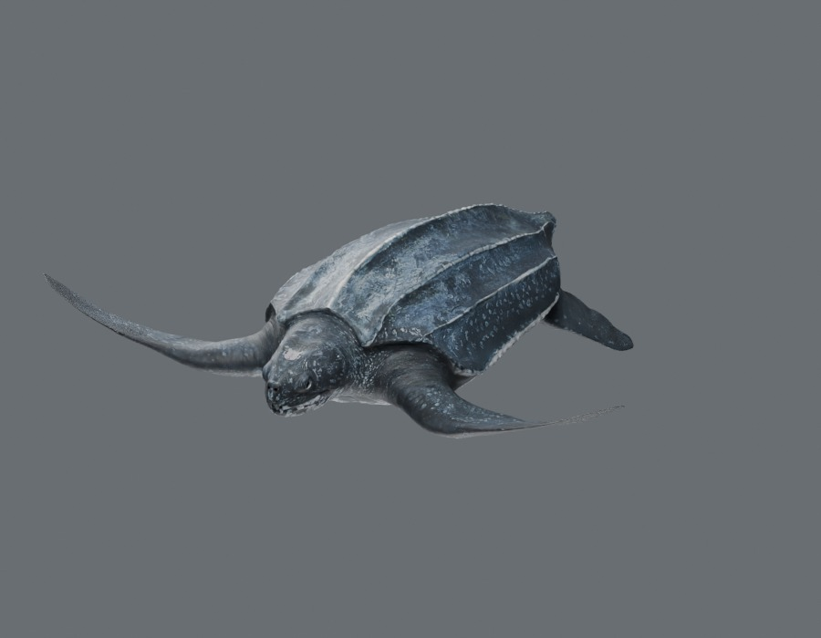
Exterior · Blender preparation render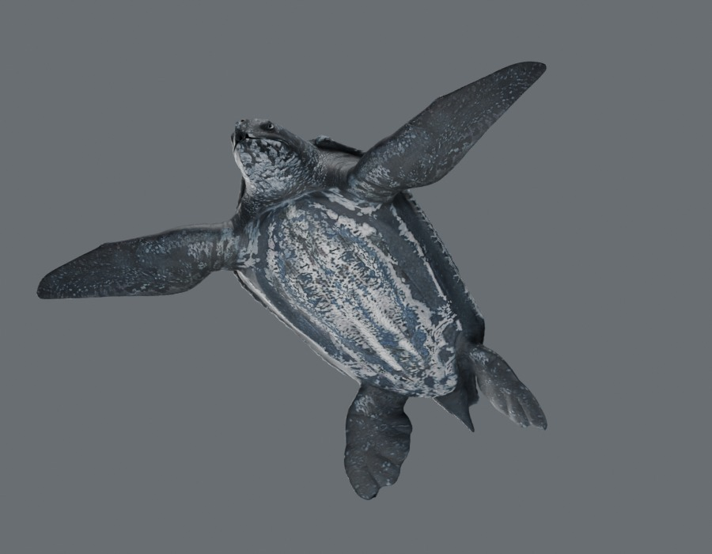
Underside · Blender preparation renderThe leatherback has ridged, leathery skin over its carapace rather than the large hard scutes of other sea turtles. Mac; adult female reconstructed from video and biological data.
Original creator animation plays on its own skeleton. Timing is uncalibrated.
No display base detected. Feet, flippers and lower surfaces are retained.
Attribution and source construction
This is a swimming animation of an adult female leatherback sea turtle (*Dermochelys coriacea*). The [Loggerhead Marinelife Center](https://marinelife.org/) (LMC) provided rare footage of a female turtle named Mac nesting during daytime, which was used to reconstruct this model. Mac (ID 666; PIT tag 989001001220036) has a minimum curved carapace length of 145.4 cm and a curved carapace width of 107.5 cm. Existing data on leatherbacks was also referenced. CG artist Johnson Martin used these data to reconstruct and animate the model using Blender software.
This research was done in collaboration with [Upwell](https://www.upwell.org/) and LMC, with special thanks to Dr. George Shillinger, Dr. Heather Harris and Dr. Kristin Reed of Upwell; Dr. Justin Perrault and Derek Aoki of LMC. Thanks to Upwell for providing funding.
Downloads are freely available for creative and non-profit use. To inquire about licensing, please visit **www.digitallife3d.org**.
Remaining candidates
The next 12 selected species are not included in this release. Sketchfab’s download flow returned access errors during this session; they are not represented by substitute meshes.
Catalog entries outside the selected batch include alternate models, life stages and anatomy studies. This release does not claim that the full catalog is complete.